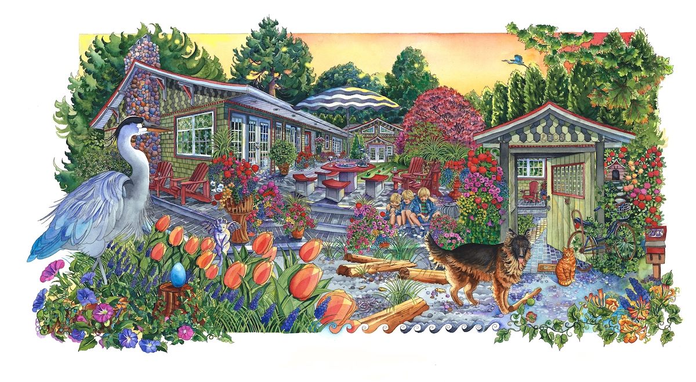
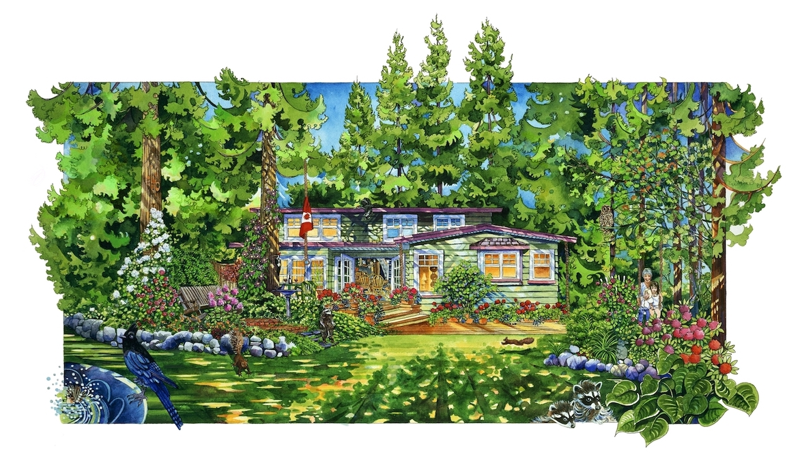
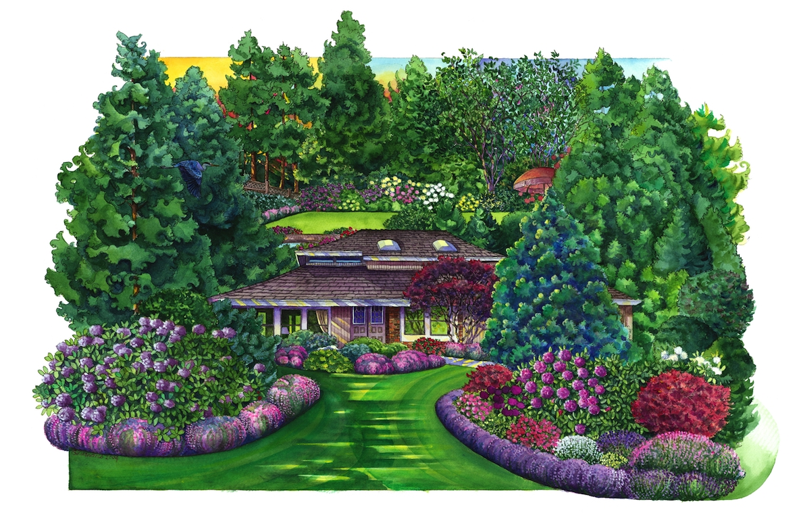
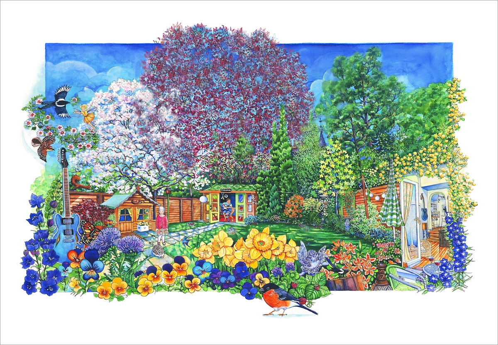
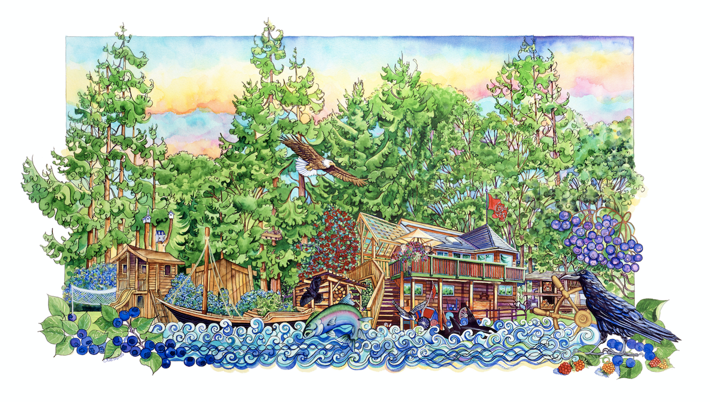
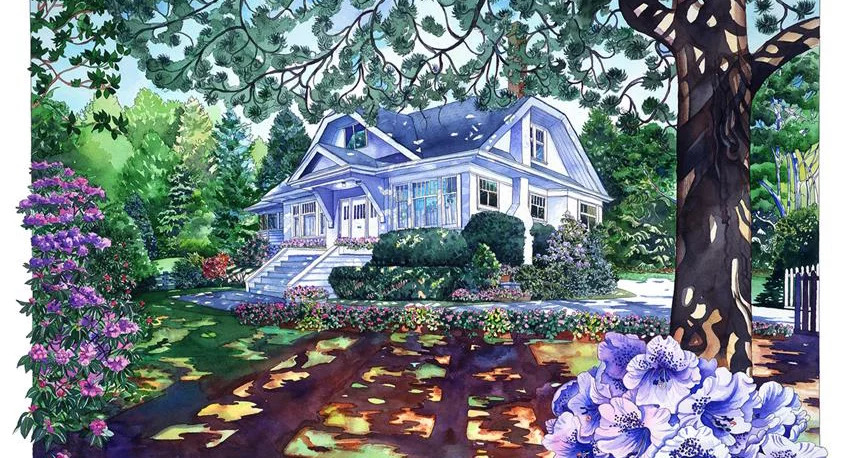

Crystal Deshaies
Crystal has earned numerous accolades in the arts, including the prestigious Senior BC Cultural Fund Award and the Canada Council Touring Award. She holds a Bachelor of Music from the University of British Columbia, where her studies also embraced Fine Art and Architecture. As an architectural design consultant and illustrator, she began crafting highly personalized house portraits in Vancouver starting in the mid-1980s.
Her expertise extends to academia, where she has instructed courses in studio art and creativity at notable Vancouver institutions such as Capilano College and the University of British Columbia. In addition to her academic roles, Crystal offers private lessons in the Art of Realistic Drawing, imparting her technical skills and creative insights to students of all levels.
Currently, Crystal is focused on developing a new series of original artworks, aiming to further enrich the cultural landscape with her distinctive vision.
— Crystal Deshaies
Art Gallery
Her work has been widely covered in the media and she's exhibited in
Vancouver and beyond.
The Anchorage
Original work 30"x40" format, on 300lb Arches rag paper.
We can also see around corners--all composed in one view. The Adarondac chair seen through the gate is the same chair as on the left, behind the Great Blue Heron, which does live in the cedar tree, second from the left, his mate flying home in the distance. They walked the Alsasian Dog on the beach every day for years; the old bike and doghouse are memories they like to keep;
Garage band

Original work 30"x40" format, on 300lb Arches rag paper.
There are two views in one composition which the artist paints to show more things and make an interesting composition. There are many meaningful things appearing, including Gerry Garcia, because the cient is a "Dead Head".
South Surrey Home
Original work 30"x40" format, on 300lb Arches rag paper.
Here is Lisa's garden. She appears with her two daughters along with the garden in the forest in this lovely neighbourhood, along with other individuals who live here too. Crystal This is a home in South Surrey with a beautiful forested garden. Gramma is there with her two grandaughters, along with other residents as well. This was a busy B&B. If you look closely you can see some of the interior we wanted to include with the table where many delivious meals were served.
Shaughnessay

Original work 30"x40" format, on 300lb Arches rag paper.
This is a home of a proud heritage home. She and her brother grew up in the neighbourhood and are very happy the home has been zoned in order to preserve some of our beloved older houses. Again, often "play" with perspective to show off the house people, garden to it's best face. The garden is pampered and they love their Dahlias.
Okanagan Residence

Original work 30"x40" format, on 300lb Arches rag paper.
Here are "many views in one painting": 1. The view from the house looking out, which appears above. 2. view to the other shore of the lake, 3. from lake looking to the house with the family's adorable Labradoodle looking on too. 4. the outdoor pizza oven appears twice, once a little closer (in the garden somewhere), to see the family enjoying their dinner next to the outdoor pizza oven and barbeque, appreciating the excellent luck tobe in this amazing place 5. also included is the entrance to the driveway, with a Quail couple with three babies.
Red House

Original work 30"x40" format, on 300lb Arches rag paper.
This is a heritage home near Fraser Street. The owners preferred a "leaf garden" they said, and the gentleman of the house is a musician. Here is his favourite Gisbon. He's just gone in to say hello to talk to his wife about something he just thought about.
Gramma Van Deman House

Vancouver Cottage with Westie in Spring

Original work 30"x40" format, on 300lb Arches rag paper.
Here is another heritage home in the Dunbar area. This busy family loves their garden and if you look closely you can see a cheetah, a memory from their trip to Kruger National Park. The girls played grass hockey, Dad plays golf, obviously, and we included the beloved Westie.
OceanPark
Original work 30"x40" format, on 300lb Arches rag paper.
This married couple want to celebrate their beautiful home in Ocean Park. Here we can see the front garden as well as the back where they love their very private hot tub, in the garden. The gentleman loves to cut the grass and he does it precisely as portrayed in the portrait.
Waterdog and Craftsman

Original work 30"x40" format, on 300lb Arches rag paper.
West Fifth Avenue between Balaclava and Trutch, on the South side are ten houses built in the Craftsman style. These homes were builders spec houses. This style was heavily influenced by the Japanese upturned eaves and wood trim. Some of the houses have emphasized the curved gable. This happy home sported the family's very clever and funny Portugese Water Dog.
Garden in Bear's Den, Glasgow
Original work 30"x40" format, on 300lb Arches rag paper.
There are two musicians in this family in Glasgow. The son has his own studio in the garden with all he needs, and you can see the father's blue guitar on display there too. This is the back garden showing a peek into the house where you can see inside the living room and kitchen. The garden itself is gorgeous with the native growth, delphiniums diffs, a garden angel lurking around, pansies, and the National Flower Emblem The Thistle. Fairies and Magpies abound along with the native robin of the UK.
Haida Gwai
Original work 30"x40" format, on 300lb Arches rag paper.
This is an indigenous family living near Skidigate, they fish and smoke every year. They wanted to include their clan names: The Eagle and The Raven; and the bounty and wildlife in the water close by; a traditional canoe; playhouses for the children; the smokehouse; gooseberries; and blueberries, and the Council of Haida Nation.
Lila Mansion
Original work 30"x40" format, on 300lb Arches rag paper.
Corey

Original work 30"x40" format, on 300lb Arches rag paper.
Portrait of the beautiful boy Corey, age eight, 1977.
Jay

Original work 30"x40" format, on 300lb Arches rag paper.
A portrait of a beautiful daughter. A blessing to all who know her, a lace-maker and master weaver, wife and wise woman.
Mother and Daughter

Original work 30"x40" format, on 300lb Arches rag paper.
This is my lovely dentist. She wanted to have a portrait done on Kits Beach with her mom.
Vancouver residence

Original work 30"x40" format, on 300lb Arches rag paper.
A busy home, they are involved in business and the community and have a great love for culture and Art. As you can see, the children love to play in their landscaping, and love to study the violin and piano. They love their home and wanted to show it off and meaningful belongings. There was a golf cart too, but it was moved behind the tree... The artist created the perspective to show both the front and back of the house, showing two views "in one".